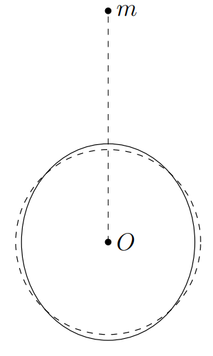

X23 (2023) — English translation
Let $\vec{e}_1$ be a unit vector drawn towards the smaller body from the center of the larger one. Acceleration of bodies due to gravity: $$\vec{a}_m=-\cfrac{GM}{L^2}\vec{e}_1\quad \vec{a}_M=\cfrac{Gm}{L^2}\vec{e}_1; \quad {\vec{a}_M-\vec{a}_m=\cfrac{G(M+m)}{L^3}\vec{e}_1}. $$ On the other hand: $$\vec{a}_M-\vec{a}_m=\omega^2L\vec{e}_1, $$ from where finally:
The field potential of a small body at a point whose distance from it is $L_m$ is equal to: $$\varphi_\text{gр}=-\cfrac{Gm}{L_m} $$ Let us find distance от малого тела до точки $A$ по теореме косинусов: $$L^2_m=L^2+r^2(\theta)-2Lr(\theta)\cos\theta $$ Finally we have:
Since the fluid is stationary, and the larger body rotates with a constant angular velocity, the fields of inertial forces $-\Delta{m}\vec{a}_0$ and $\Delta{m}\omega^2\vec{r}_\perp$, acting on a particle of mass $\Delta{m}$, contribute to the potential difference. For the potential difference between points $A$ and $O$ we have: $$\varphi_{\text{ин}A}-\varphi_{\text{ин}O}=-\int\limits_{O}^{A}(\omega^2\vec{r}_\perp-\vec{a}_0)\cdot d\vec{r} $$ Taking into account that $\vec{a}_0=Gm\vec{e}_1/L^2$, а $\vec{r}_\perp=\vec{r}$: $$\varphi_{\text{ин}A}-\varphi_{\text{ин}O}=-\int\limits_{O}^{A}(\omega^2\vec{r}-\cfrac{Gm}{L^2}\vec{e}_1)\cdot d\vec{r}=\cfrac{Gmr\cos\theta}{L^2}-\cfrac{\omega^2r^2}{2} $$ Finally:
Note: Use the following approximation: $$\cfrac{1}{\sqrt{1+a^2-2a\cos\theta}}\approx{1+a\cos\theta+\cfrac{a^2(3\cos^2\theta-1)}{2}} $$
The surface of the larger body at equilibrium is equipotential. Since the surface disturbances are small, we will assume that the potential of the gravitational field of the larger body on the surface is equal to: $$\varphi_M=-\cfrac{GM}{r(\theta)} $$ Since surface эквandpotentialьна: $$\varphi_A=Gm\left(\cfrac{1}{L}-\cfrac{1}{\sqrt{L^2+r^2-2rL\cos\theta}}\right)+\cfrac{Gmr\cos\theta}{L^2}-\cfrac{G(M+m)r^2}{2L^3}-\cfrac{GM}{r(\theta)}+C_1=C_2 $$ where $C_1$ and $C_2$ - некоторые постоянные величины. Раскладывая expression под корнем: $$\cfrac{1}{\sqrt{L^2+r^2-2rL\cos\theta}}\approx{\cfrac{1}{L}\left(1+a\cos\theta+\cfrac{a^2(3\cos^2\theta-1)}{2}\right)};\quad a=\cfrac{r}{L}. $$ Thus, we have: $$-\cfrac{GM}{r}-\cfrac{G(M+3m\cos^2\theta)r^2}{2L^3}=const $$ Note that terms, пропорциональные $\cos \theta$ полностью сократились. From-за этого and потребовалось раскладывать potential малого тела до второго порядка. Next substituting $r=R+h$ and expanding до первого порядка potential большого тела. В potentialе малого тела можно ссу считать $r = R$, since он сам является малой величиной from-за условия $R \ll L$. We get $$-\cfrac{GM}{R}+\cfrac{GMh}{R^2}-\cfrac{G(M+3m\cos^2\theta)R^2}{2L^3}=const. $$ Оставим только переменные terms: $$h\cfrac{GM}{R^2}-\cfrac{3GmR^2\cos^2\theta}{2L^3}=const $$ Since $h(\pi/2)=0$, the last constant is zero. Then we have:

Note: Use the results obtained when solving item $\mathrm{A4}$.
In point $\mathrm{A4}$ we obtained an approximate expression for the potential of inertial forces and the gravitational field of a smaller body: $$\varphi_\text{внеш}=-\cfrac{G(M+3m\cos^2\theta)r^2}{2L^3} $$ Then for компоненты силы $F_\tau$ we get: $$F_\tau=-\cfrac{\Delta{m}}{r}\cfrac{\partial{\varphi_\text{внеш}}}{\partial{\theta}}=-\cfrac{3Gm\Delta{m}r\sin2\theta}{2L^3} $$ Отметим, что эта компонента силы возникает from-зnotоднородности гравитационного поля меньшего тела. Since $\omega\neq{\Omega}$, в произвольный moment времени $t$ parameter $\theta$ equals: $$\theta=\theta_0-\omega_1 t, \quad \omega_1 = \omega - \Omega. $$ Also учтем, что с нужной нам точностью $r \approx R$. Then finally we have: $$F_\tau(t{,}\theta_0)=\cfrac{3Gm\Delta{m}R}{2L^3}\sin\left(2\omega_1 t-2\theta_0\right) $$
Let's substitute $F_\tau(t{,}\theta)$ into the equation of motion: $$\Delta{m}r^2\left(\ddot{\theta}+2\gamma\dot{\theta}+\omega^2_0(\theta-\theta_0)\right)=rF_\tau(t{,}\theta)=\Delta{m}r^2\cdot\cfrac{3Gm}{2L^3}\sin\left(2\omega_1 t-2\theta\right) $$ Since $\omega^2_0\gg{Gm/L^3}$ - можно считать, что $F_\tau(t{,}\theta)\approx{F_\tau(t{,}\theta_0)}$. Then: $$\ddot{\theta}+2\gamma\dot{\theta}+\omega^2_0(\theta-\theta_0)=\cfrac{3Gm}{2L^3}\sin\left(2\omega_1 t-2\theta_0\right) $$ Solution уравнения будем искать в виде $\theta(t) =\theta_0 + Re\left(\hat{A}e^{2i(\omega-\Omega)t}\right)$: $$\left(\omega^2_0-4\omega_1^2+4i\omega_1\gamma\right)\hat{A}=\cfrac{3Gm}{2L^3}e^{-i(2\theta_0+\pi/2)} $$ Let us represent $\hat{A}$ в exponent/indexной форме $\hat{A}=Ae^{-i\varphi_0}$, where:
The volume of liquid flowing through one of the faces $hdz$ during time $dt$ is equal to the product of the flow velocity $\dot{\theta} R$ by the area $hdz$ and the considered time $dt$: $$ dV_1 = \dot{\theta} R h dz dt \approx \dot{\theta} R h_0 dz dt. $$ Here мы учитываем, что высота поверхности воды меняется мало, and это практически не влияет на поcurrent воды. Скорости течения, отвечающие углам $\theta_0$ and $\theta_0 + d \theta_0$ несколько отличаются, therefore сность втекающего and вытекающего volumeов воды $$ dV = \dot{\theta}(\theta_0) R h_0 dz dt -\dot{\theta}(\theta_0+ d\theta_0) R h_0 dz dt = -Rh_0 \frac{\partial \dot{\theta}}{\partial \theta_0}d\theta_0 dz dt. $$ From-за этого меняется высота поверхности жидкости: $$ dV = Rd\theta_0 dz dh = R d\theta_0 dz \dot{h} dt = -Rh_0 \frac{\partial \dot{\theta}}{\partial \theta_0}d\theta_0 dz. $$ Hence $\dot{h} = - h_0\dfrac{\partial \dot{\theta}}{\partial \theta_0}$, а since $h_0 = const$
From the results of point $\mathrm{B2}$ we get: $$\theta=\theta_0 + A\sin(2\omega_1t-\varphi_1), \quad {\dot\theta=2\omega_1A\cos(2\omega_1t-\varphi_1)}.$$ Then we find $${\cfrac{\partial\dot\theta(t,\theta_0)}{\partial\theta_0}=4\omega_1A\sin(2\omega_1t-\varphi_1)}, $$ hence: $$\dot{h'}=-4h_0\omega_1A\sin(2\omega_1t-\varphi_1) $$ Integrating, we find:
At the maximum points, the cosine is equal to one, therefore: $$2\omega_1t-\varphi_1=0{;}\,2\pi. $$ Substituting $\varphi_1$, we find:
The force arm corresponding to the angle $\beta$ is equal to $R\sin\beta$. Then for the moment element $dM_z$ we have: $$dM_z=R\sin\beta dF_\tau(t{,}\theta{,}\beta) $$ For $dF_\tau$ also we have: $$dF_\tau=\cfrac{3GmR\sin\beta}{2L^3} \Delta m \sin(2\omega_1t-2\theta). $$ Mass рассматриваемого volumeа $$ \Delta m = \rho dV = \rho h(t,\, \theta,\, \beta) dS = \rho h(t,\, \theta,\, \beta) R^2 \sin \beta d\beta d\theta. $$ Then we get: $$dF_\tau=\cfrac{3GmR\sin\beta}{2L^3} \sin(2\omega_1t-2\theta) \rho h(t,\, \theta,\, \beta) R^2 \sin \beta d\beta d\theta. $$ For $h(t{, }\theta{,}\beta)$ we have: $$h(t,\,\theta,\,\beta)=h_0(1+2A\cos(2\omega_1t-\varphi_1)) $$ since $A$ не зависит от расстояния до оси $z$. Let us represent expression for $M_z⟦ 17⟧$M_z=\cfrac{3Gm\rho R^4h_0}{2L^3}\int\limits_0^{\pi}\sin^3\beta d\beta\int\limits_0^{2\pi}(1+2A\cos(2\omega_1t-\varphi_1))\sin(2\omega_1t-2\theta)d\theta $$ Для интеграла по $\beta$ имеем: $$\int\limits_0^{\pi}\sin^3\beta d\beta=\int\limits_{-1}^{1}(1-\cos^2\beta)d\cos\beta=\cos\beta-\cfrac{\cos^3\beta}{3}\bigg|_{-1}^{1}=\cfrac{4}{3} $$ Поэтому: $$M_z=\cfrac{2Gm\rho R^4h_0}{L^3}\int\limits_0^{2\pi}(1+2A\cos(2\omega_1t-\varphi_1))\sin(2\omega_1t-2\theta)d\theta $$ Второй интеграл берётся за период, поэтому для функции $\sin(2 \omega_1t-2\theta)$ он равен нулю. Перейдём к последнему интегралу: $$\int\limits_0^{2\pi}\cos(2\omega_1t-\varphi_1)\sin(2\omega_1t-2\theta)d\theta=\int\limits_0^{2\pi}\cos(2\omega_1t-2\theta-\varphi_0)\sin(2\omega_1t-2\theta)d\theta $$ Воспользуемся тригонометрической формулой: $$\sin\alpha\cos\beta=\cfrac{\sin(\alpha+\beta)+\sin(\alpha-\beta)}{2} $$ Получим: $$M_z=\cfrac{2Gm\rho R^4h_0A}{L^3}\int\limits_0^{2\pi}[\sin(4\omega_1t-4\theta-\varphi_0)+\sin\varphi_0]d\theta $$ Final:
Note: with synchronous rotation, the angular momentum of the Earth associated with rotation around its axis can be neglected.
Let us use the law of conservation of angular momentum, which we denote as $K$: $$K=I\Omega_0+\cfrac{mML^2_0\omega_0}{M+m}=const $$ where $I=2MR^2/5$ - moment of inertia Земного ball/sphereа относительно diameterа. В установившемся режиме $\Omega=\omega=\omega_\text{sync}$, therefore: $$K=\omega_\text{sинх}\left(I+\cfrac{mML^2_\text{sинх}}{m+M}\right) $$ Since for/at синхронном вращении Землю можно считать материальной точкой: $$K\approx{\cfrac{mML^2_\text{sинх}\omega_\text{sинх}}{m+M}} $$ Using соratio $$\omega^2=\cfrac{G(M+m)}{L^3} $$ we get: $$K\approx\cfrac{G^{2/3}Mm}{(m+M)^{1/3}\omega^{1/3}_\text{sинх}} $$ from where finally:
The angular momentum of the system $K$ using the connection $\omega$ and $L$ is reduced to the form: $$K=I\Omega+\cfrac{mML^2}{m+M}\sqrt{\cfrac{G(m+M)}{L^3}} $$ Differentiating, we find: $$I\dot{\Omega}+\cfrac{mM}{2(m+M))}\sqrt{\cfrac{G(m+M)}{L}}\dot{L}=0 $$ from where:
At point $\mathrm{B5}$ it was found that the position of the tide lags behind the Moon by an angle $\varphi_0/2$ in the direction of rotation of the Moon relative to the Earth. Then we have: $$2\beta=\arctan\cfrac{-4\omega_1\gamma}{\omega^2_0-4\omega^2_1}=-\varphi_0 $$ Also for сницы высот for/atлива and отлива we have: $$\Delta{h}=h_\text{пр}-h_\text{от}=4Ah_0 $$ or, после подстановки выражения for $A$: $$\Delta{h}=\cfrac{6Gmh_0}{L^3_0\sqrt{(\omega^2_0-4\omega^2_1)^2+16\omega^2_1\gamma^2}}=\cfrac{6Gmh_0\cos 2\beta}{L^3_0(\omega^2_0-4\omega^2_1)} $$ We find:
From the equation of the dynamics of rotational motion relative to the center of mass we obtain: $$I\dot{\Omega}=M_z=\cfrac{4\pi Gm\rho R^4h_0A\sin\varphi_0}{L^3} $$ Next note that $h_0A=\Delta{h}/4$, а $\varphi_0=-2\theta$. Then we have:
After switching to the synchronous rotation mode, we can assume that: $$\omega=const\quad L=const\quad \omega^2_0\gg\omega^2_1 $$ Therefore: $$I\dot{\Omega}=M_z=\cfrac{4\pi Gm\rho R^4h_0A\sin\varphi_0}{L^3}\approx\cfrac{4\pi Gm\rho{R}^4h_0}{L^3_\text{sинх}}\cdot{\cfrac{3Gm}{2L^3_\text{sинх}\omega^2_0}}\cdot\cfrac{4(\omega_\text{sинх}-\Omega)\gamma}{\omega^2_0} $$ hence: $$d\tau_2=-\cfrac{d\Omega}{\Omega-\omega_\text{sинх}}\cdot{\cfrac{ML^6_\text{sинх}\omega^4_0}{120\pi G^2m^2\rho{R}^2h_0\gamma}} $$ from where: